Manual de usuario
Jefe administrativo en GESPRO
Para quien lleva la administración de la obra: la caja chica, los papeles y los cobros de los subcontratistas, las remuneraciones que llegan de BUK y los tratos. Todo lo que aquí se aprueba o se confirma pasa a ser costo de una partida.
- Rol en GESPRO
- Jefe administrativo
- Sus pantallas
- Bandeja · Caja chica · Subcontratos · Estados de pago · Mano de obra · Tratos
- Ejemplos con
- Carolina Pizarro · obra 1201 Edificio Mirador del Lago
1Lo que hace el jefe administrativo
El jefe administrativo cuida que cada peso que sale de la obra tenga su respaldo y su partida. No compra ni mide: revisa, rinde y confirma lo que otros registran. Los pasos destacados son los de este manual.
- Vales de caja chicaLos aprueba con su boleta.
- RendiciónJunta los vales y repone el fondo.
- SubcontratosExige y guarda sus documentos.
- Estados de pagoFirma después de la obra.
- Mano de obraCarga y confirma BUK cada mes.
- TratosTrabajo pagado por cantidad.
- Cierre del mesControl de gestión cierra con todo eso.
| Quién | Qué hace con lo del jefe administrativo |
|---|---|
| Custodio de la caja chica | Paga, arma los vales con la boleta y los envía. |
| Profesional de obra | Visa la rendición de la caja chica y firma antes que tú los estados de pago. |
| Digitador | Arma los contratos y los estados de pago, y los reenvía cuando vuelven observados. |
| Control de gestión | No cierra el mes con una importación de mano de obra sin confirmar. |
| Finanzas | Registra la factura del subcontratista cuando el estado de pago se aprueba. |
2Aprobar los vales de caja chica
El inicio cuenta lo que espera tu firma. Los vales de caja chica llegan a la bandeja con su monto y quien los armó.

- La bandeja: un documento por visar. Debajo, las cifras de tus obras y lo que enviaste y sigue en visación.
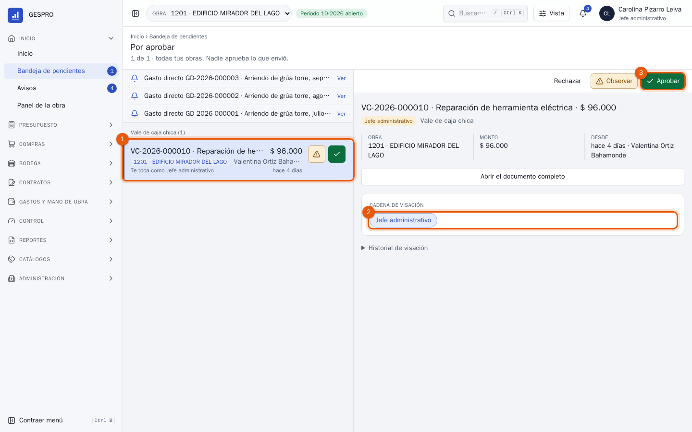
- El vale: concepto, monto, quién lo armó y desde cuándo espera.
- La cadena de un vale tiene un solo paso: el tuyo.
- Aprobar lo deja como costo de su partida. Durante unos segundos se puede deshacer. Abrir el documento completo muestra la boleta antes de decidir; si falta o no se lee, Observar lo devuelve al custodio.
3Rendir y reponer la caja chica
Lo que la caja chica gastó se repone con una rendición. En Gastos y mano de obra › Caja chica, el fondo muestra cuánto tiene y cuánto ya está aprobado esperando rendirse.
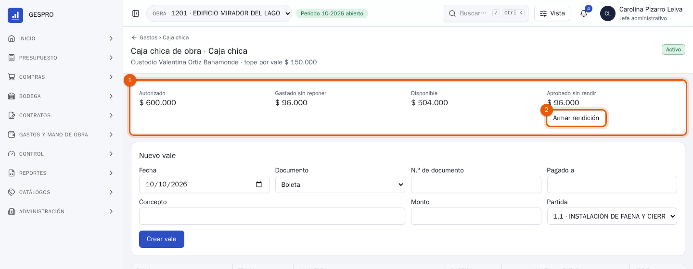
- El saldo del fondo: lo autorizado, lo gastado que todavía no se repone, lo disponible y lo aprobado sin rendir.
- Armar rendición junta en un documento todos los vales aprobados que no están en otra rendición.
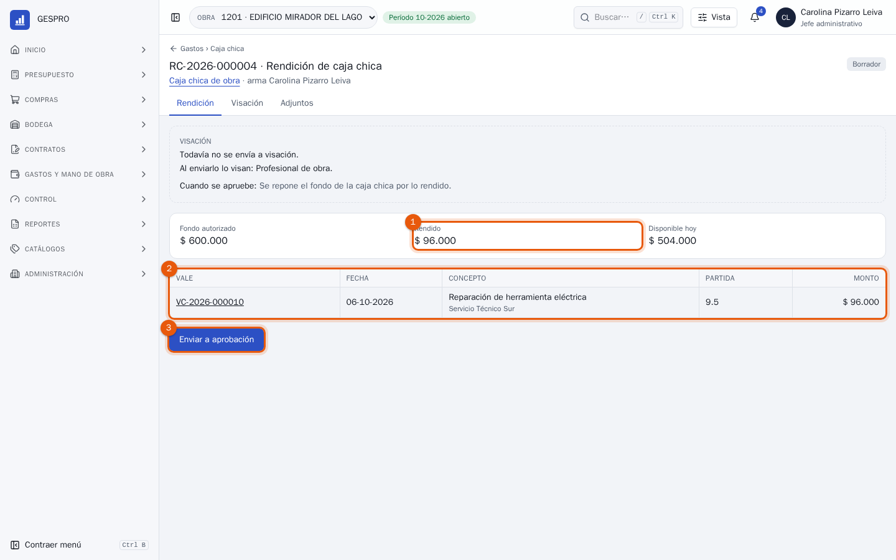
- Lo rendido: la suma de los vales.
- Los vales de la rendición, cada uno con su partida. El folio abre el vale con su boleta.
- Enviar a aprobación la manda al profesional de obra.
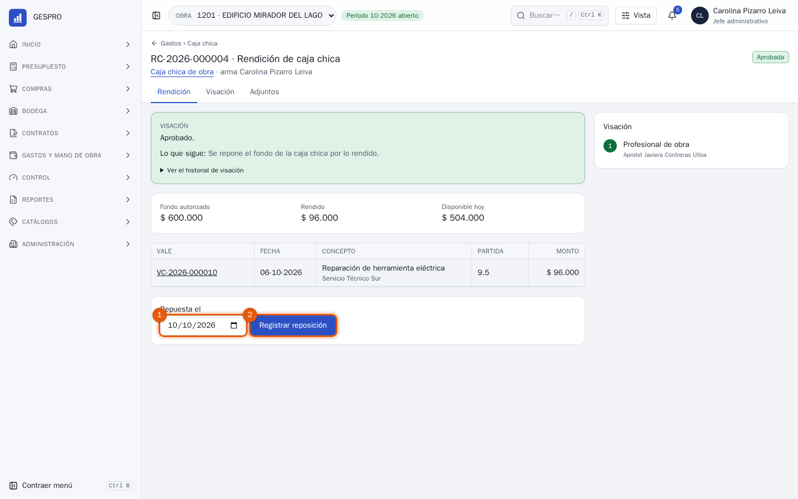
- Repuesta el: el día en que el dinero volvió al custodio.
- Registrar reposición devuelve al fondo lo rendido: aquí, lo disponible vuelve a $ 600.000.
Para tener en cuentaEl costo entra al aprobar cada vale, no al reponer. La rendición mueve dinero, no costo: por eso el informe de la obra no cambia cuando se repone.
4Los documentos del subcontratista
Cada subcontrato exige sus documentos: el F30, la póliza, el F30-1 de cada mes y la nómina. Un estado de pago no debería avanzar si falta uno. Aquí, terreno observó el estado de pago N° 4 de la instalación eléctrica.
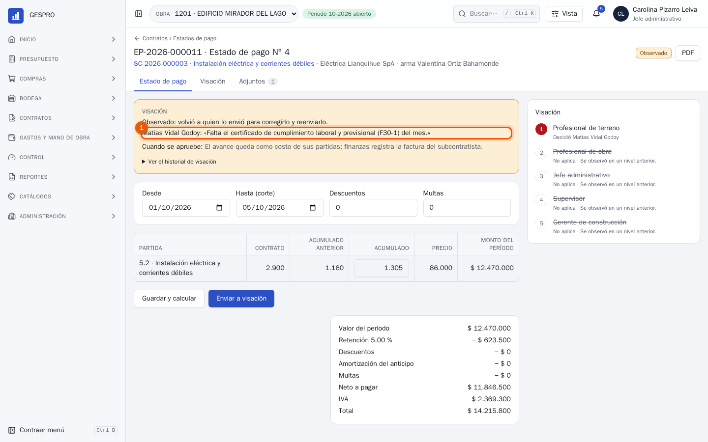
- La observación dice qué falta: el F30-1 del mes. El estado de pago vuelve a quien lo armó y la cadena se detiene.
El documento se sube en el contrato: el enlace del subcontrato, arriba del estado de pago, lo abre.
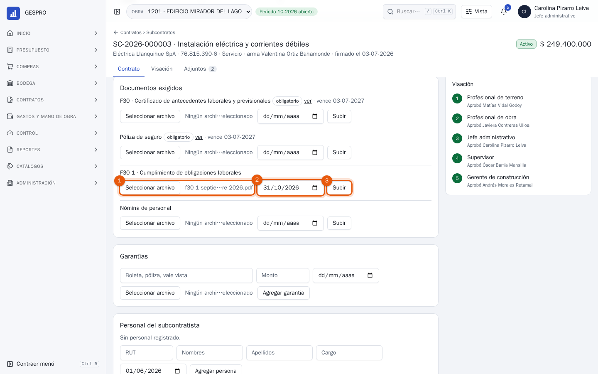
- El archivo, en PDF o en foto.
- Hasta cuándo vale. Con esa fecha, GESPRO sabe cuándo pedirlo de nuevo.
- Subir lo deja en el contrato, con el enlace ver y su vencimiento.
Con el documento arriba, quien armó el estado de pago lo reenvía y la cadena vuelve a empezar desde terreno. Lo que falta, lo vencido y lo que vence en los próximos 30 días, en todos los contratos, está en Contratos › Subcontratos › Ver documentos de subcontratistas.
5Tu firma en el estado de pago
El estado de pago lo firman terreno, el profesional de obra, el jefe administrativo, el supervisor y el gerente de construcción, en ese orden. Cuando llega a ti, la obra ya confirmó las cantidades: tu revisión es la del contrato.
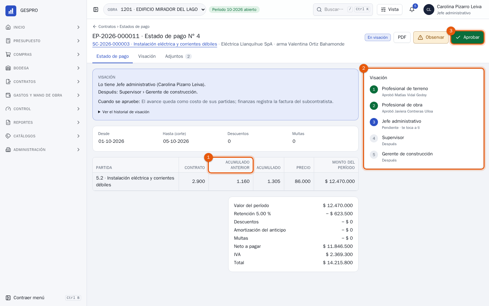
- Acumulado anterior y acumulado: lo cobrado hasta el estado de pago anterior y lo que se cobra hasta este corte, contra lo contratado. Abajo, la retención, los descuentos, las multas y el anticipo que se amortiza.
- La cadena: quién ya firmó y quién sigue. Te toca a ti.
- Aprobar lo pasa al supervisor. Al aprobarse entero, el avance queda como costo de su partida y finanzas registra la factura.
6La mano de obra de BUK
Cada mes, las remuneraciones de la obra entran desde el archivo que exporta BUK: una fila por persona y partida. En Gastos y mano de obra › Mano de obra se elige el mes y se carga el archivo.
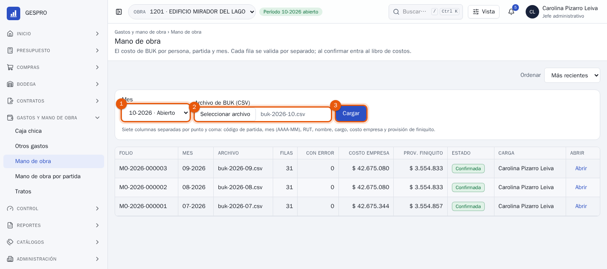
- El mes de las remuneraciones.
- El archivo de BUK, tal como sale: siete columnas separadas por punto y coma.
- Cargar lo lee y valida cada fila por separado. Todavía no hay costo.
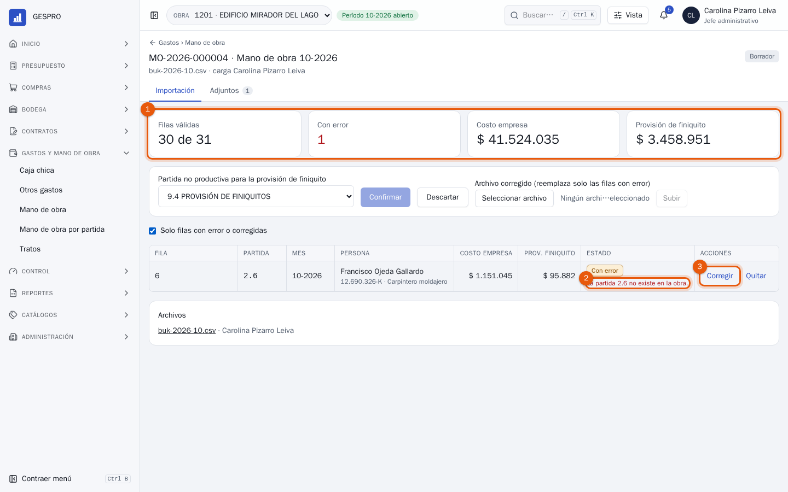
- El resultado: filas válidas, filas con error y lo que costará.
- El error de cada fila, en palabras: aquí, una persona cargada en una partida que la obra no tiene.
- Corregir la arregla en pantalla. Quitar la saca, y un archivo corregido reemplaza solo las filas con error.
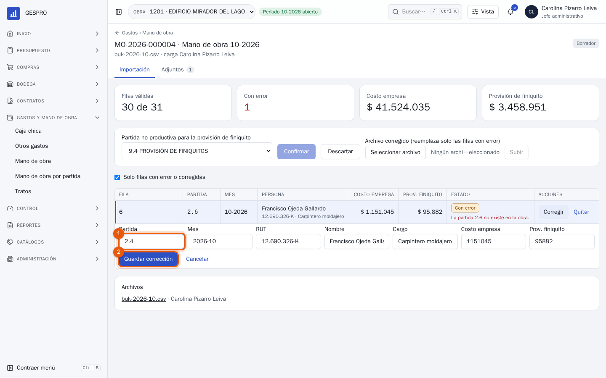
- El dato que estaba mal: la partida correcta es la 2.4, moldajes.
- Guardar corrección vuelve a validar la fila. Queda marcada como corregida.
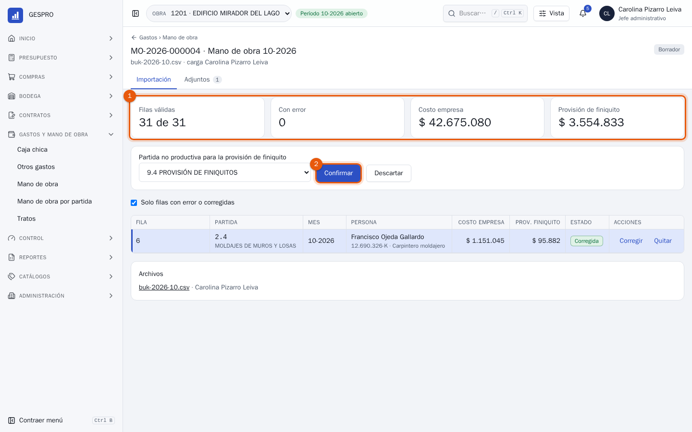
- Todo válido: 31 de 31.
- Confirmar lleva el costo al libro de la obra, por persona y partida. La provisión de finiquito va a la partida no productiva que se elige al lado; GESPRO propone la del mes anterior.
Para tener en cuentaSi BUK corrige el mes, se carga el archivo completo otra vez. Al confirmarlo, la importación anterior se revierte y la nueva la reemplaza: el costo no se duplica.
7Los tratos
Un trato es trabajo pagado por cantidad: tantos metros a tanto el metro. En Gastos y mano de obra › Tratos se registra antes de empezar, para que la partida sepa lo que viene.
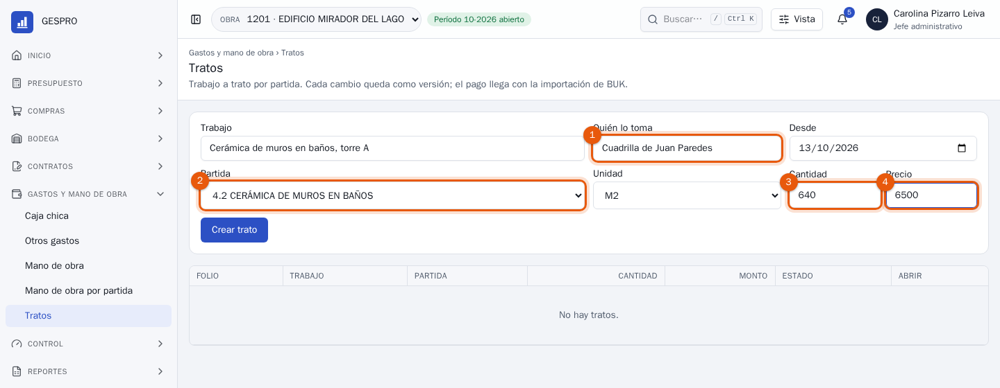
- Quién lo toma: la cuadrilla o la persona.
- La partida a la que va.
- La cantidad, en su unidad.
- El precio por unidad. Crear trato lo registra.
Un cambio de cantidad o de precio queda como una versión nueva del trato, con la anterior guardada. El pago no sale del trato: llega con la importación de BUK del mes, y Mano de obra por partida muestra lo pagado junto a los tratos vigentes.
8Preguntas frecuentes
¿Por qué no puedo reenviar el estado de pago que observaron?
Porque firmas en su cadena, y en GESPRO nadie aprueba lo que envió. Lo reenvía quien lo armó; tú subes lo que faltaba y firmas cuando te llegue.
Un vale de caja chica pasa del tope.
No se puede crear: el tope por vale está en la configuración del fondo. Si el gasto es mayor, va como otro gasto directo, en Gastos y mano de obra › Otros gastos, con la firma del profesional de obra.
BUK trae a alguien que no trabaja en la obra.
Quitar saca esa fila de la importación sin tocar las demás. El archivo original queda adjunto, por si hay que explicar la diferencia.
¿Puedo cerrar el mes sin la mano de obra?
El cierre no avanza con una importación sin confirmar, y avisa si el mes no tiene mano de obra. Control de gestión lo ve en la lista del cierre.